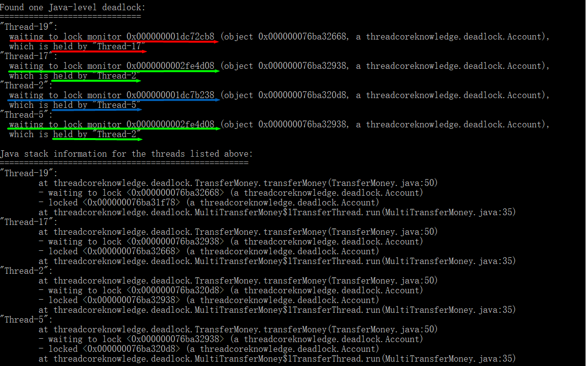

1.死锁是什么？有什么危害？
①什么是死锁
- 它是发生在并发中的（单线程是不会发生死锁的）
- 一定要互不相让：两个（或多个）线程（或进程）相互持有对方所需要的资源，又不主动释放，导致大家都无法继续前进，程序陷入无尽的阻塞，这就是死锁。
- 下图形象地模拟了两个线程（或进程）互不相让的情况：
- 两个线程造成死锁的情况
- 如下图所示，线程 A 持有锁 1 的同时试图获取锁 2，线程 B 持有锁 2 的同时试图获取锁 1。因为锁在同一时刻只能被一个线程拥有，所以锁 1 不可能被线程 B 拿走（已经被线程 A 拿走了），锁 2 也不可能被线程 A 拿走（已经被线程 B 拿走了）。

- 多个线程造成死锁的情况
- 如果多个线程之间存在环路的锁的依赖关系，那么也可能会发生死锁。
- 如下图所示（纵轴表示时间），线程 1 持有锁 A 的同时试图获取锁 B，线程 2 持有锁 B 的同时试图获取锁 C，线程 3 持有锁 C 的同时试图获取锁 A。因为锁在同一时刻只能被一个线程拥有，所以线程 1 获取不到锁 B（已经被线程 2 拿走了），线程 2 获取不到锁 C（已经被线程 3 拿走了），线程 3 也获取不到锁 A（已经被线程 1 拿走了），多个线程之间形成了锁的环路。
②死锁的影响
- 死锁对于不同系统的影响和危害是不一样的，这取决于系统对死锁的处理能力。
- 在一部分数据库中，拥有检测并且放弃事务（即修复死锁）的能力。如果多个事务发生了死锁，数据库会检测到这个情况并且指派某个事务先放弃，在其他事务顺利执行后，再让被放弃的事务执行。
- 在 JVM 中，无法自动处理死锁，但是它的一些工具可以帮助我们检测死锁。
③死锁的特点
- 不一定发生，但是遵守 “墨菲定律”（如果事情有变坏的可能，不管这种可能性有多小，它总会发生）。
- 几率不高但危害大
- 一旦发生，多是高并发场景，影响用户多。
- 根据死锁所在的位置不同，可能会使得整个系统崩溃、子系统崩溃或者系统的性能降低。
- 压力测试无法找出所有潜在的死锁
- 压力测试是高并发系统上线前必须要做的环节，需要模拟很多用户量做全链路压测，来发现系统中薄弱的部分并做出提升，以便更好的应对高并发的情况。
- 死锁的发生与并发量是正相关的关系，而不是必然的关系。如果系统的业务包含随机获取锁，此时压力测试不一定能模拟出所有的情况。
2.发生死锁的例子
①最简单的情况
- 第一个线程首先启动（标记位为 1），它首先锁定 o1，然后睡眠 500 毫秒，然后尝试获取 o2。
- 在第一个线程睡眠的时候，第二个线程启动（标记位为 2）。它首先锁定 o2，然后睡眠 500 毫秒，然后尝试获取 o1（等待第一个线程释放 o1）。
- 第一个线程睡眠结束后需要锁定 o2 才能继续执行，而此时 o2 已经被第二个线程锁定。
- 第二个线程睡眠结束后需要锁定 o1 才能继续执行，而此时 o1 已经被第一个线程锁定。
- 第一个线程和第二个线程相互等待，它们都持有对方想要的资源，同时又想拿到对方已经拥有的资源，就陷入了死锁。
- 具体代码如下：
1 | package threadcoreknowledge.deadlock; |
注意看退出信号：Process finished with exit code -1，是非正常退出的信号，对比正常结束的程序的退出码是 0。
尽量要避免非正常退出情况的发生，因为强行退出可能会导致数据不完整。
②实际生产中的例子：转账
- A 给 B 转账：需要两把锁（先锁 A、再锁 B）
- A 被扣钱时需要一把锁（锁住 A）：防止多个线程同时对 A 扣钱
- B 收钱时需要一把锁（锁住 B）：防止多个线程同时给 B 转钱
- 成功获取两把锁后，需要 ①检查 A 的余额是否充足、②扣除 A 的余额、③增加 B 的余额。必须将这三个步骤变成原子操作，期间不能被其他线程打断或者执行一半就结束，而是要符合原子操作的定义，要不全部执行成功，要不全部执行不成功。
- 具体代码如下：
1 | package threadcoreknowledge.deadlock; |

- 如果两个人互相转钱，此时两个人获取锁的顺序相反，可能会导致死锁发生。
- 通过如下代码模拟死锁发生的情形：
1 | package threadcoreknowledge.deadlock; |
注意：
1.在单机的情况下，一个 static 对象在 Java 虚拟机中只有一个实例，所以不同的线程同时获取这个锁时最多有一个线程能够获取到它。
2.在分布式的情况下，一些锁的规则和单机情况是不一样的。
③模拟多人随机转账
- 假如有五千人同时随机转账，看似发生死锁的几率降低了，但是依然会发生死锁（墨菲定律）。
- 账户数量可以决定死锁发生几率的高低 — 账户越少，发生死锁的几率越高。但是根据墨菲定律，即使账户数量很多，只要有发生死锁的风险，随着时间的推移，也会发生死锁。
- 死锁的危害很大，如果发生多人连环死锁，会导致这些人的交易都无法进行。在线上系统中，一旦发生死锁，可能会导致系统崩溃或者子系统崩溃，从而影响很多用户。
- 具体代码如下：
1 | package threadcoreknowledge.deadlock; |
结论：在写程序的时候就要避免程序有发生死锁的可能，不能因为死锁发生的几率小或转账的人数多就忽视它。
3.死锁的 4 个必要条件
这 4 个条件缺一不可，只有这 4 个条件同时满足时，才会发生死锁。
①互斥条件
- 一个资源每次只能被同一个进程或线程使用。若是资源可以无限共享（多个进程或线程可以同时使用），说明它不满足互斥条件，这时就不会发生死锁。
②请求与保持条件
- 进程或线程因请求资源而阻塞时，对已经获得的资源保持不放。
③不剥夺条件
- 进程或线程已经获得的资源，在没有使用完之前，不能被强行剥夺。
- 注意：数据库不满足不剥夺条件
④循环等待条件
- 若干进程或线程之间形成一种头尾相接的循环等待资源的关系，即获取锁的顺序必须构成环路。
只要破坏以上任意一个条件，死锁就不会发生。
4.如何定位死锁？
- jstack：在命令行中使用，更加灵活。
- ThreadMXBean：写在代码中，可以提前让程序拥有发生死锁后的处理能力。
①jstack
- 它是 Java 提供的一个工具，使用
jstack命令可以检测出相对明显的死锁关系。对于不明显的死锁关系，可能无法检测出来，但是它至少可以帮助我们分析一下线程栈，看看每个线程持有哪些锁，方便我们发现锁的依赖关系（可以看到哪个线程加了哪些锁、获取了哪些锁、是在哪些语句中做的、正在等待或者阻塞的线程是哪些 ……）。 - 如何使用：
- 在命令行中找到正在运行的 Java 程序的 pid（windows 下查看进程的命令为
tasklist）
- 执行
jstack pid命令：帮助我们判断正在运行的程序是否产生了死锁
- 多人转账代码分析：一旦其中几个线程发生死锁后，就会逐渐导致所有的线程都不可用。因为转账选择线程是随机的，一旦某个线程随机选择了已经陷入死锁的线程，此时这个线程也要陷入无穷的等待了，因为这个线程所等待的线程永远也不会苏醒过来。这样恶性循环下去，所有线程都会陷入死锁。

②ThreadMXBean
- 在经常调用锁的地方，可以通过 ThreadMXBean 判断是否发生了死锁，然后用报警机制、记录日志或者重启程序等方式及时解决死锁问题。
- 如下代码模拟了死锁发生的情形并通过 ThreadMXBean 检测出了死锁：
1 | package threadcoreknowledge.deadlock; |
5.修复死锁的策略
①线上发生死锁应该怎么办？
- 死锁的特点：不可提前预料、蔓延的速度非常快、危害非常大。
- 任何线上问题都需要防患于未然，一旦发生类似于死锁的严重影响可用性的问题，不造成损失地补救几乎是不可能的。
- 线上发生死锁问题后，必须立刻保存案发现场，然后重启服务器以暂时保证线上服务的安全，然后利用刚才保存的堆栈信息，排查死锁，修改代码，重新发版。
- 关于案发现场：日志信息远远不如堆栈信息详细，不方便我们进一步排查，所以必须要保存当前堆栈信息。
- 第一优先级：立刻恢复线上的正常环境，不能影响用户体验。
②常见修复策略
- 避免策略：如哲学家就餐问题的换手方案、转账换序方案等。
- 思路：避免相反的获取锁的顺序
- 转账时避免死锁：实际上我们并不在乎获取锁的顺序，它不影响程序的正确性，我们只在乎最后是否把两把锁（转入方的锁和转出方的锁）都拿在手里，至于哪把锁先拿，哪把锁后拿都没有关系。
- 如下代码根据避免策略修复了双人转账代码的死锁问题：
1 | package threadcoreknowledge.deadlock; |
- 检查与恢复策略：一段时间检查是否有死锁，如果有就剥夺某一个资源，来打开死锁。
- 鸵鸟策略：如果发生死锁的概率极其低，那么我们就直接忽略它，直到死锁发生的时候，再人工修复。
a.避免策略（优先推荐）
- 哲学家就餐问题
- 问题描述：如下图所示
- 有死锁和资源耗尽的风险：每个哲学家都拿着左边的叉子，永远都在等右边的叉子（或者相反）。
- 如下代码演示了哲学家就餐问题导致的死锁：
1 | package threadcoreknowledge.deadlock; |
- 多种解决方案：
- 服务员检查（避免策略）：每次吃饭前判断是否会发生死锁，如果会发生，就不能继续接下来的动作。
- 改变一个哲学家拿叉子的顺序（避免策略）：要想发生死锁，必须所有人同时拿起左边的叉子，但是如果有一个哲学家先拿起右边的叉子、再拿起左边的叉子，就不会发生死锁，即避免发生环路，破坏了死锁的循环等待条件。
- 餐票（避免策略）：要求必须拿到餐票才能吃饭，而我们为了避免死锁，一共只发四张餐票，这样就可以避免五个人同时准备吃饭的情况。
- 领导调节（检测与恢复策略）：当发生死锁时，命令一个哲学家放下筷子让别人先吃，破坏了死锁的不可剥夺条件。
- 如下代码演示了解决方案 2：
1 | package threadcoreknowledge.deadlock; |
哲学家就餐问题的练习题：1226. 哲学家进餐
题目对应的题解：[LeetCode] 1226. 哲学家进餐（Medium）Java语言题解
b.检测与恢复策略
- 检测算法：锁的调用链路图（虽然允许发生死锁，但是在每次调用锁时都把它记录下来，并用一个图维护它，然后定期检查 “锁的调用链路图” 中是否存在环路，一旦存在环路（即发生死锁），就用死锁恢复机制来进行恢复。）
- 死锁恢复方法 1 — 进程或线程终止：逐个终止进程或线程，直到死锁消除。
终止顺序的三个考虑因素：- ①程序重要性的优先级（前台交互优先于后台处理）
- ②已占用资源、还需要的资源
- ③已经运行的时间
- 死锁恢复方法 2 — 资源抢占：将已经分发出去的锁收回来，让线程回退几步，这样就不用结束整个线程，成本比较低。
- 缺点：如果同一个线程一直被抢占，就会造成饥饿（线程一直得不到运行）。
c.鸵鸟策略（不推荐）
- 编码代价小，适用于发生死锁的概率极其低的情况。
6.实际工程中如何避免死锁？
如果在开发的过程中遵守以下规范，那么发生死锁的概率就会大大降低。
①设置超时时间
- synchronized 不具备尝试获取锁的能力。
- 而 Lock 类的 tryLock(long timeout, TimeUnit unit) 方法具备尝试获取锁的能力，其中 timeout 指超时时间，若是过了超时时间还没有拿到锁，它就会放弃拿锁，退回去做别的事情，这样也能防止死锁的发生。
- 造成超时的原因：发生了死锁、线程陷入死循环、线程执行很慢等。
- 获取锁失败后需要打印日志、发报警邮件、重启等。
- 如下代码演示了使用 tryLock 方法来避免死锁：
1 | package threadcoreknowledge.deadlock; |
②多使用并发类而不是自己设计锁
- JDK 1.5 以后引入了很多并发类（ConcurrentHashMap、ConcurrentLinkedQueue、AtomicInteger、AtomicBoolean 等），使用这些并发类，就不用自己手动控制 wait、notify 等底层语句，并且使用成熟的并发类可以降低发生死锁的概率。
- 在实际应用中 java.util.concurrent.atomic 包十分有用，包中的原子类具有原子性，可以直接使用（线程安全），简单方便且效率比使用 Lock 更高。
- 多用并发集合少用同步集合，并发集合比同步集合的可扩展性更好。并发场景需要用到 map，应该首先想到用 ConcurrentHashMap。
③尽量降低锁的使用粒度：用不同的锁而不是一把锁
- 一把锁所保护的范围在满足业务要求的前提下越小越好。
④如果能使用同步代码块，就不使用同步方法：自己指定锁对象
- 使用同步代码块可以缩小锁的范围（同步方法的范围较大）。
- 同步代码块中使用的锁对象是可以由我们自己控制的。
⑤给线程起个有意义的名字
- debug 和排查时事半功倍，框架和 JDK 都遵守这个最佳实践。
⑥避免锁的嵌套
- 一旦获取锁的顺序相反，就可能造成死锁。
- 如 MustDeadLock 类，具体见 2.发生死锁的例子 — ①最简单的情况。
⑦分配资源前先看能不能收回来：银行家算法
- 在资源放出去之前进行有效的计算，判断一下放出去之后有没有可能导致死锁，要是不可能导致死锁，再放出去。
⑧尽量不要几个功能用同一把锁：专锁专用
- 不同的功能使用不同的锁对象，专锁专用。
7.面试常考问题
①写一个必然死锁的例子
具体见 2.发生死锁的例子 — ①最简单的情况
1 | package threadcoreknowledge.deadlock; |
②生产中什么场景下可能发生死锁？
- 最明显的情况：在一个方法中获取多个锁
- 在多个方法中循环调用锁，形成锁的链路（如库存的增减、金钱的转移等）。
③发生死锁必须满足哪些条件？
具体见 3.死锁的 4 个必要条件
- 互斥条件
- 请求与保持条件
- 不剥夺条件
- 循环等待条件
④如何定位死锁？
具体见 4.如何定位死锁？
- jstack：发生死锁后对程序进行堆栈分析来定位死锁。
- ThreadMXBean：防患于未然， 在程序运行中利用这个类撰写代码（如定时扫描等）帮助我们找到死锁并处理（如重启线程、报警、记录日志等）它。
⑤有哪些解决死锁问题的策略？
具体见 5.修复死锁的策略 — ②常见修复策略
- 避免策略（优先推荐）：如哲学家就餐问题的换手方案、转账换序方案等。
- 检测与恢复策略：如哲学家就餐问题的领导调节等。
- 鸵鸟策略（不推荐）：适用于发生死锁的概率极其低的情况。
⑥讲讲经典的哲学家就餐问题
具体见 5.修复死锁的策略 — ②常见修复策略 — a.避免策略（优先推荐）
- 问题描述
- 有死锁和资源耗尽的风险
- 多种解决方案
- 服务员检查（避免策略）
- 改变一个哲学家拿叉子的顺序（避免策略）
- 餐票（避免策略）
- 领导调节（检测与恢复策略）
⑦实际工程中如何避免死锁？
具体见 6.实际工程中如何避免死锁？
- 设置超时时间
- 多使用并发类而不是自己设计锁
- 尽量降低锁的使用粒度：用不同的锁而不是一把锁
- 如果能使用同步代码块，就不使用同步方法：自己指定锁对象
- 给线程起个有意义的名字
- 避免锁的嵌套
- 分配资源前先看能不能收回来：银行家算法
- 尽量不要几个功能用同一把锁：专锁专用
附录
- 我的个人博客：messi1002.top
- 如有错误或疑惑之处 请联系 wjymessi@163.com